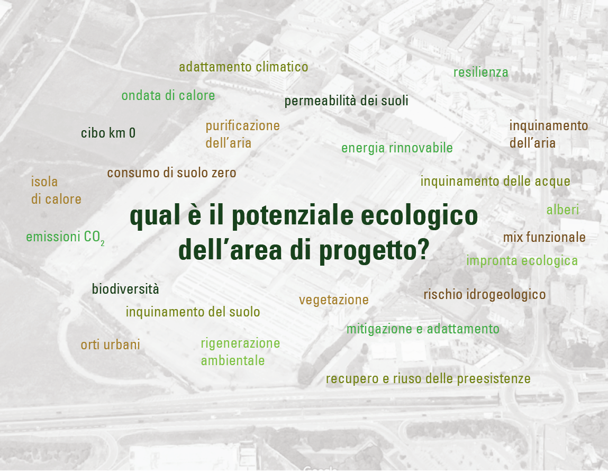

| SOSTENIBILITÀ |
 |
| L'ex
stabilimento Gres per decenni è stato uno dei poli produttivi della
città di Bergamo, e oggi ha l'occasione per tornare ad essere uno
spazio vitale per la città nel rispetto dell'ambiente. Questo tema
progettuale richiede da un lato una visione del futuro, in linea con
gli obiettivi europei, e dall'altro un approccio pragmatico che
garantisca la sostenibilità ambientale e la fattibilità della proposte
contenute in questo documento. Futuro e sostenibilità sono due temi intimamente legati fra loro e non possono essere considerati separatamente, ma devono rientrare all’interno di una visione univoca e condivisa. Quale sarà il futuro di questa area? E la proposta progettuale come si confronta con i cambiamenti climatici, gli obiettivi di riduzione delle emissioni di CO2 e di consumo di suolo zero? A fronte di una totale artificializzazione del suolo, qual è oggi il potenziale ecologico dell’area di progetto? È possibile innescare un processo di rigenerazione ambientale che restituisca alla comunità e alla natura uno spazio vivibile e sano? Dopo decenni di attività industriale, che ha generato ricchezza economica a scapito dell'ambiente, è possibile invertire questa tendenza e promuovere un impatto ambientale positivo partendo dal recupero dell'area? Queste sono solo alcune delle domande importanti ai quali bisogna dare una risposta concreta. Non si tratta solamente di sostituire tipologie edilizie con altre secondo un principio speculativo, ma è necessario un profondo ripensamento dei processi di riconversione delle aree dismesse in un ottica di sostenibilità. Per rispondere a queste domande, di seguito è riportata l'analisi di sito e i ragionamenti condotti per la definizione delle strategie di sostenibilità. Queste non rimanda solamente al tema della riduzione delle emissioni di CO2, ma ad una visione integrale, tesa a coniugare i temi sociali, economici e ecologici: • proponendo un mix funzionale che rende viva la struttura durante tutta la giornata e promuova il coinvolgimento della comunità; • attraverso il riuso delle strutture esistenti con interventi minimi a garantire sicurezza e flessibilità e il recupero degli involucri quali buffer bioclimatici; • promuovendo la rigenerazione ambientale degli spazi esterni per uno spazio sano e vivibile. |